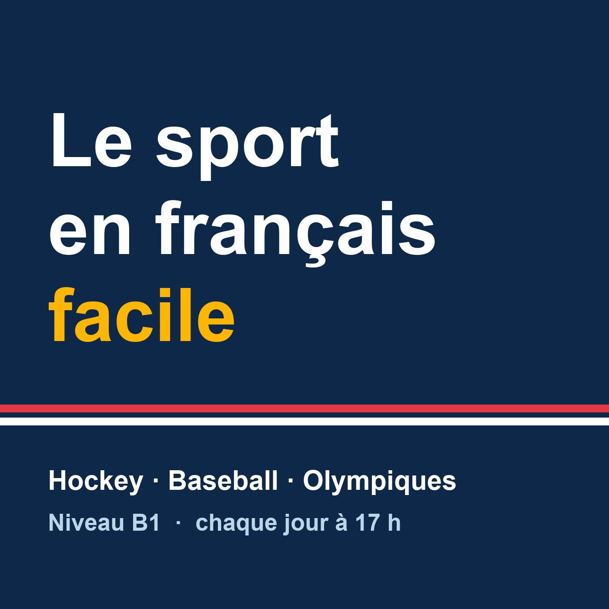

Chaque matin : les nouvelles de la veille du hockey, du baseball et des sports olympiques, racontées en français simple (niveau B1), lentement, pour apprendre le français. Résumés basés sur les reportages de Radio-Canada Sports.
Abonnez-vous dans votre application de balados avec ce lien :https://jmsmorris.github.io/francais-sports-podcast/feed.xml